Yash Bhalgat | Meet Shah | Sharad Mirani
Q3 Solution
Single Dimension Image Retrieval
We know that 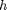 is the convolutional kernel for gradient operation, we take the Fourier Transform to get :
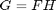
To obtain the image we divide 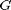 by 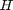 to get 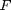 but then as in Q.2 we will face the same problem in which tend to infinty as tends to zero. Also we haven't considered the possibility of an additive noise being present in the image
The presence of noise in the image changes the recovery process as :
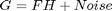
Solving to get F we get 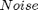 in the denominator and hence the image results screw up when is less compared 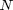.
In the case of 2D images we have :
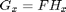 and 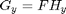
An acccurate way to represnt would be :
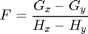
A few advanctages that we have in this case are : We can use the values of 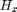 and 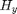 whenever one of them blows up to estimate the other one and hence prevent the image from screwing up whenever tends to zero. Secondly in the formula for above the noise removal is intrinsic as we have used the gradient components of and to obtain .
A few problems that we can percieve are that whenever the and are both tending to zero , screws up again. Secondly we assume that noise is additive in nature and hence we use the formula as above, had the noise been of different signs in different gradients , the above formula will cause the noise in both directions to be increased rather than being sidelined.